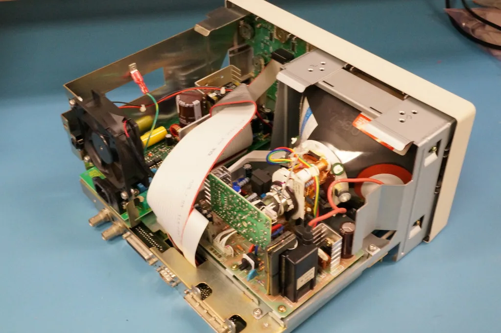

삼성전자·SK하이닉스, HBM 이후 겨냥한 CXL 메모리 개발 경쟁
삼성전자와 SK하이닉스가 고대역폭메모리(HBM) 이후를 대비해 CXL(컴퓨트 익스프레스 링크) 메모리 개발에 속도를 내고 있다. 두 회사는 HBM과 기존 D램(DDR) 사이에 새로운 메모리 계층을 만들어, 인공지능 데이터 처리 효율과 비용 구조를 동시에 개선하는 방향을 모색하고 있다. 두 회사 모두 관련 연구개발 인력을 늘리며 차세대 메모리 경쟁에 대비하는 모습이다.
CXL은 서버 내 여러 장치가 메모리를 유연하게 공유할 수 있도록 해주는 차세대 연결 기술이다. 이를 활용한 하이브리드 메모리를 도입하면 AI 추론 작업의 효율을 기존 대비 상당 폭 끌어올릴 수 있다는 분석이 업계에서 제기되고 있어, 두 회사 모두 상용화를 서두르는 모습이다. 데이터센터 운영 비용을 낮추면서도 처리 성능을 유지할 수 있다는 점이 CXL 메모리의 가장 큰 장점으로 꼽힌다.

이런 움직임의 배경에는 HBM 시장의 폭발적 성장과, 그 다음 단계를 선점해야 한다는 위기감이 함께 자리한다. 시장에서는 올해 HBM 시장 규모가 전년 대비 크게 늘어날 것으로 추산하고 있으며, 주력 제품군도 세대교체가 이뤄지는 국면이다. 업계 관계자들은 HBM 이후를 준비하는 것이 한국 반도체 업계가 잡을 수 있는 마지막 기회가 될 수 있다고 지적한다. 중국 반도체 기업들이 빠르게 추격해오는 상황에서, 기술 격차를 유지하려는 압박감도 커지고 있다.
정부 차원에서도 메모리 반도체를 AI 경쟁의 핵심 전략 자산으로 보는 시각이 확산되고 있다. AI 관련 정책을 다뤄온 전문가들은 한국이 보유한 메모리 반도체 기술력과 제조업 데이터가 AI 경쟁에서 활용할 수 있는 강력한 카드라고 강조해왔다. 이런 인식에 따라 관련 연구개발과 설비 투자에 대한 지원 필요성도 함께 거론되고 있다.
두 회사의 CXL 메모리 경쟁은 아직 초기 단계로, 실제 양산과 고객사 채택까지는 추가적인 검증 과정이 필요할 것으로 보인다. 새로운 메모리 계층이 기존 서버 아키텍처와 안정적으로 호환되는지 검증하는 작업에도 상당한 시간이 소요될 전망이다. 업계에서는 누가 먼저 안정적인 대용량 CXL 제품을 시장에 내놓느냐가 향후 서버·데이터센터용 메모리 시장의 판도를 가를 것으로 내다보고 있다.
해외 경쟁사들도 유사한 방향의 차세대 메모리 기술 개발에 나서고 있어, 국내 업체들이 초기 기술 우위를 얼마나 오래 유지할 수 있을지도 관전 포인트로 꼽힌다. 표준화 작업과 생태계 조성이 함께 이뤄져야 시장이 본격적으로 열릴 것이라는 분석도 나온다. 관련 업계 협의체를 중심으로 규격 통일 논의도 병행되고 있어, 상용화 시점이 예상보다 앞당겨질 가능성도 열려 있다. 국내 반도체 업계 전반이 차세대 메모리 기술을 새로운 성장동력으로 삼고 있는 만큼, 이번 경쟁의 결과는 산업 전체에 파급 효과를 미칠 전망이다.
글로벌 빅테크들의 AI 인프라 투자가 계속 확대되는 가운데, 국내 메모리 업체들의 차세대 기술 경쟁은 한동안 더 치열해질 전망이다. 데이터센터 수요가 늘어날수록 메모리 계층을 최적화하려는 고객사들의 요구도 다양해지고 있어, 두 회사의 제품 전략도 이에 맞춰 세분화될 것으로 예상된다. 삼성전자와 SK하이닉스가 각각 어떤 로드맵으로 CXL 시장에 대응해 나갈지 주목된다.